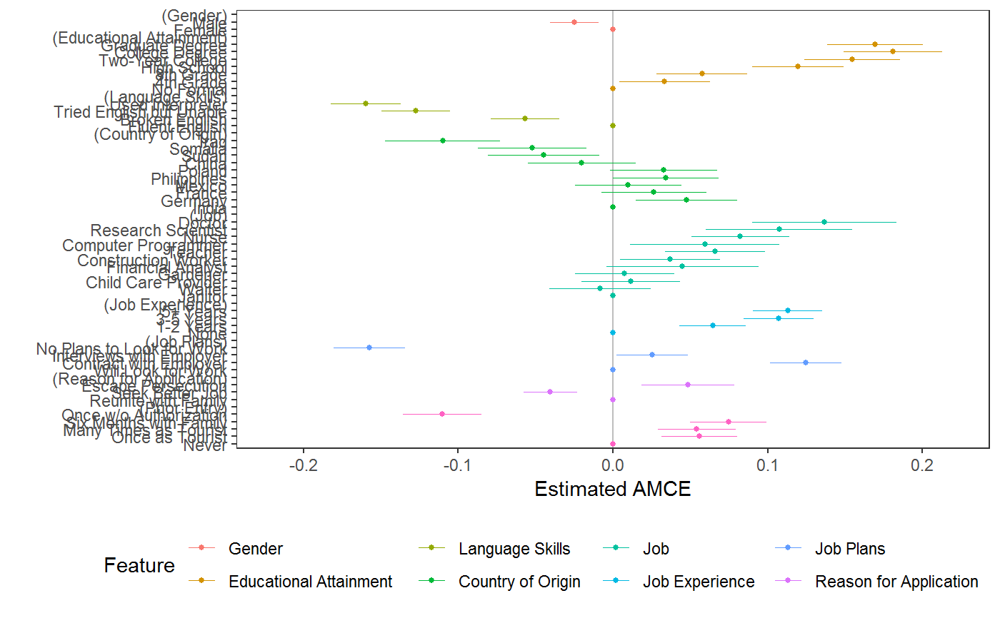

Simple analyses of conjoint (factorial) experiments and visualization of results.
cj(data, formula, id = NULL, weights = NULL, estimate = c("amce", "frequencies", "mm", "amce_differences", "mm_differences"), feature_order = NULL, feature_labels = NULL, level_order = c("ascending", "descending"), by = NULL, ...)
Arguments
| data | A data frame containing variables specified in |
|---|---|
| formula | A formula specifying a model to be estimated. All variables should be factors. For |
| id | An RHS formula specifying a variable holding respondent identifiers, to be used for clustering standard errors. |
| weights | An (optional) RHS formula specifying a variable holding survey weights. |
| estimate | A character string specifying an estimate type. Current options are average marginal component effects (or AMCEs, “amce”, estimated via |
| feature_order | An (optional) character vector specifying the names of feature (RHS) variables in the order they should be encoded in the resulting data frame. |
| feature_labels | A named list of “fancy” feature labels to be used in output. By default, the function looks for a “label” attribute on each variable in |
| level_order | A character string specifying levels (within each feature) should be ordered increasing or decreasing in the final output. This is mostly only consequential for plotting via |
| by | A formula containing only RHS variables, specifying grouping factors over which to perform estimation. |
| … | Additional arguments to |
Details
The main function cj is a convenience function wrapper around the underlying estimation functions that provide for average marginal component effects (AMCEs), by default, via the amce function, marginal means (MMs) via the mm function, and display frequencies via cj_freqs and cj_props. Additional estimands may be supported in the future through their own functions and through the cj interface. Plotting is provided via ggplot2 for all types of estimates.
The only additional functionality provided by cj over the underlying functions is the by argument, which will perform operations on subsets of data, returning a single data frame. This can be useful, for example, for evaluating profile spillover effects and subgroup results, or in any situation where one might be inclined to use a for loop or lapply, calling cj repeatedly on subgroups.
Note: Some features of cregg (namely, the amce_diffs) function, or estimate = "amce_diff" here) only work with full factorial conjoint experiments. Designs involving two-way constraints between features are supported simply by expressing interactions between constrained terms in formula (again, except for amce_diffs). Higher-order constraints may be supported in the future.
See also
Functions: amce, mm, cj_freqs, mm_diffs, plot.cj_amce, cj_tidy
Data: immigration, taxes
Examples
# load data requireNamespace("ggplot2") data("immigration") data("taxes") # calculate MMs f1 <- ChosenImmigrant ~ Gender + Education + LanguageSkills + CountryOfOrigin + Job + JobExperience + JobPlans + ReasonForApplication + PriorEntry d1 <- cj(immigration, f1, id = ~ CaseID, estimate = "mm", h0 = 0.5) # plot MMs plot(d1, vline = 0.5)# calculate MMs for survey-weighted data d1 <- cj(taxes, chose_plan ~ taxrate1 + taxrate2 + taxrate3 + taxrate4 + taxrate5 + taxrate6 + taxrev, id = ~ ID, weights = ~ weight, estimate = "mm", h0 = 0.5) # plot MMs plot(d1, vline = 0.5)# MMs split by profile number stacked <- cj(immigration, f1, id = ~ CaseID, estimate = "mm", by = ~ contest_no) ## plot with grouping plot(stacked, group = "contest_no", vline = 0.5, feature_headers = FALSE)## subgroup analysis immigration$ethnosplit <- cut(immigration$ethnocentrism, 2) x <- cj(na.omit(immigration), ChosenImmigrant ~ Gender + Education + LanguageSkills, id = ~ CaseID, estimate = "mm", h0 = 0.5, by = ~ ethnosplit) plot(x, group = "ethnosplit", vline = 0.5)# combinations of/interactions between features immigration$language_entry <- interaction(immigration$LanguageSkills, immigration$PriorEntry, sep = "_") ## higher-order MMs for feature combinations cj(immigration, ChosenImmigrant ~ language_entry, id = ~CaseID, estimate = "mm", h0 = 0.5)#> outcome statistic feature #> 1 ChosenImmigrant mm language_entry #> 2 ChosenImmigrant mm language_entry #> 3 ChosenImmigrant mm language_entry #> 4 ChosenImmigrant mm language_entry #> 5 ChosenImmigrant mm language_entry #> 6 ChosenImmigrant mm language_entry #> 7 ChosenImmigrant mm language_entry #> 8 ChosenImmigrant mm language_entry #> 9 ChosenImmigrant mm language_entry #> 10 ChosenImmigrant mm language_entry #> 11 ChosenImmigrant mm language_entry #> 12 ChosenImmigrant mm language_entry #> 13 ChosenImmigrant mm language_entry #> 14 ChosenImmigrant mm language_entry #> 15 ChosenImmigrant mm language_entry #> 16 ChosenImmigrant mm language_entry #> 17 ChosenImmigrant mm language_entry #> 18 ChosenImmigrant mm language_entry #> 19 ChosenImmigrant mm language_entry #> 20 ChosenImmigrant mm language_entry #> level estimate std.error #> 1 Fluent English_Never 0.5963939 0.01827231 #> 2 Broken English_Never 0.5000000 0.01925997 #> 3 Tried English but Unable_Never 0.4211248 0.01828730 #> 4 Used Interpreter_Never 0.4209703 0.01953176 #> 5 Fluent English_Once as Tourist 0.6330409 0.01842944 #> 6 Broken English_Once as Tourist 0.5700000 0.01871277 #> 7 Tried English but Unable_Once as Tourist 0.5195936 0.01903453 #> 8 Used Interpreter_Once as Tourist 0.4458509 0.01864185 #> 9 Fluent English_Many Times as Tourist 0.6222222 0.01806926 #> 10 Broken English_Many Times as Tourist 0.5759768 0.01880069 #> 11 Tried English but Unable_Many Times as Tourist 0.5082956 0.01941641 #> 12 Used Interpreter_Many Times as Tourist 0.4579025 0.01914901 #> 13 Fluent English_Six Months with Family 0.6250000 0.01804284 #> 14 Broken English_Six Months with Family 0.6008902 0.01886381 #> 15 Tried English but Unable_Six Months with Family 0.5243902 0.01838400 #> 16 Used Interpreter_Six Months with Family 0.4843305 0.01886269 #> 17 Fluent English_Once w/o Authorization 0.4651163 0.01844877 #> 18 Broken English_Once w/o Authorization 0.3865906 0.01839320 #> 19 Tried English but Unable_Once w/o Authorization 0.3211144 0.01787934 #> 20 Used Interpreter_Once w/o Authorization 0.3151261 0.01738657 #> z p lower upper #> 1 5.2754093 1.324601e-07 0.5605808 0.6322070 #> 2 0.0000000 1.000000e+00 0.4622512 0.5377488 #> 3 -4.3131111 1.609732e-05 0.3852824 0.4569673 #> 4 -4.0462177 5.205182e-05 0.3826887 0.4592518 #> 5 7.2189341 5.239663e-13 0.5969199 0.6691620 #> 6 3.7407600 1.834646e-04 0.5333236 0.6066764 #> 7 1.0293719 3.033049e-01 0.4822866 0.5569006 #> 8 -2.9047063 3.675978e-03 0.4093136 0.4823883 #> 9 6.7640982 1.341421e-11 0.5868071 0.6576373 #> 10 4.0411728 5.318454e-05 0.5391282 0.6128255 #> 11 0.4272481 6.691986e-01 0.4702402 0.5463511 #> 12 -2.1984154 2.791952e-02 0.4203711 0.4954339 #> 13 6.9279551 4.269673e-12 0.5896367 0.6603633 #> 14 5.3483480 8.876070e-08 0.5639178 0.6378626 #> 15 1.3267103 1.846045e-01 0.4883583 0.5604222 #> 16 -0.8307148 4.061348e-01 0.4473603 0.5213007 #> 17 -1.8908430 5.864530e-02 0.4289574 0.5012752 #> 18 -6.1658323 7.011336e-10 0.3505406 0.4226406 #> 19 -10.0051570 1.446620e-23 0.2860715 0.3561572 #> 20 -10.6331464 2.089421e-26 0.2810490 0.3492031## average component interaction effects (AMCEs for feature interactions) cj(immigration, ChosenImmigrant ~ language_entry, id = ~CaseID, estimate = "amce")#> outcome statistic feature #> 1 ChosenImmigrant amce language_entry #> 2 ChosenImmigrant amce language_entry #> 3 ChosenImmigrant amce language_entry #> 4 ChosenImmigrant amce language_entry #> 5 ChosenImmigrant amce language_entry #> 6 ChosenImmigrant amce language_entry #> 7 ChosenImmigrant amce language_entry #> 8 ChosenImmigrant amce language_entry #> 9 ChosenImmigrant amce language_entry #> 10 ChosenImmigrant amce language_entry #> 11 ChosenImmigrant amce language_entry #> 12 ChosenImmigrant amce language_entry #> 13 ChosenImmigrant amce language_entry #> 14 ChosenImmigrant amce language_entry #> 15 ChosenImmigrant amce language_entry #> 16 ChosenImmigrant amce language_entry #> 17 ChosenImmigrant amce language_entry #> 18 ChosenImmigrant amce language_entry #> 19 ChosenImmigrant amce language_entry #> 20 ChosenImmigrant amce language_entry #> level estimate std.error #> 1 Fluent English_Never 0.00000000 NA #> 2 Broken English_Never -0.09639390 0.02618064 #> 3 Tried English but Unable_Never -0.17526907 0.02582059 #> 4 Used Interpreter_Never -0.17542363 0.02683525 #> 5 Fluent English_Once as Tourist 0.03664704 0.02615310 #> 6 Broken English_Once as Tourist -0.02639390 0.02572048 #> 7 Tried English but Unable_Once as Tourist -0.07680028 0.02665136 #> 8 Used Interpreter_Once as Tourist -0.15054298 0.02661602 #> 9 Fluent English_Many Times as Tourist 0.02582832 0.02547902 #> 10 Broken English_Many Times as Tourist -0.02041705 0.02647773 #> 11 Tried English but Unable_Many Times as Tourist -0.08809827 0.02648818 #> 12 Used Interpreter_Many Times as Tourist -0.13849139 0.02736039 #> 13 Fluent English_Six Months with Family 0.02860610 0.02572849 #> 14 Broken English_Six Months with Family 0.00449631 0.02642545 #> 15 Tried English but Unable_Six Months with Family -0.07200365 0.02593916 #> 16 Used Interpreter_Six Months with Family -0.11206341 0.02683160 #> 17 Fluent English_Once w/o Authorization -0.13127762 0.02624380 #> 18 Broken English_Once w/o Authorization -0.20980331 0.02644584 #> 19 Tried English but Unable_Once w/o Authorization -0.27527953 0.02577453 #> 20 Used Interpreter_Once w/o Authorization -0.28126785 0.02589821 #> z p lower upper #> 1 NA NA NA NA #> 2 -3.6818774 2.315227e-04 -0.14770700 -0.04508079 #> 3 -6.7879576 1.137321e-11 -0.22587650 -0.12466164 #> 4 -6.5370602 6.273978e-11 -0.22801975 -0.12282751 #> 5 1.4012500 1.611393e-01 -0.01461210 0.08790618 #> 6 -1.0261820 3.048058e-01 -0.07680512 0.02401732 #> 7 -2.8816643 3.955810e-03 -0.12903600 -0.02456457 #> 8 -5.6561043 1.548474e-08 -0.20270942 -0.09837654 #> 9 1.0137094 3.107214e-01 -0.02410964 0.07576629 #> 10 -0.7711028 4.406460e-01 -0.07231245 0.03147835 #> 11 -3.3259466 8.811880e-04 -0.14001415 -0.03618239 #> 12 -5.0617482 4.154294e-07 -0.19211676 -0.08486601 #> 13 1.1118456 2.662046e-01 -0.02182080 0.07903301 #> 14 0.1701507 8.648916e-01 -0.04729663 0.05628925 #> 15 -2.7758665 5.505482e-03 -0.12284348 -0.02116383 #> 16 -4.1765458 2.959692e-05 -0.16465239 -0.05947444 #> 17 -5.0022344 5.666961e-07 -0.18271451 -0.07984072 #> 18 -7.9333195 2.133646e-15 -0.26163621 -0.15797042 #> 19 -10.6802923 1.258746e-26 -0.32579668 -0.22476238 #> 20 -10.8605119 1.777501e-27 -0.33202741 -0.23050828